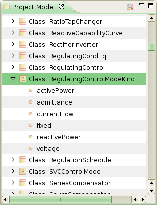
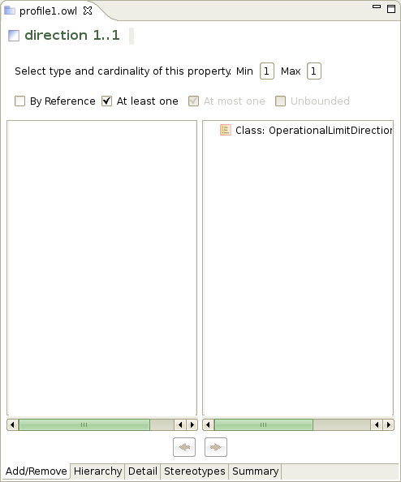
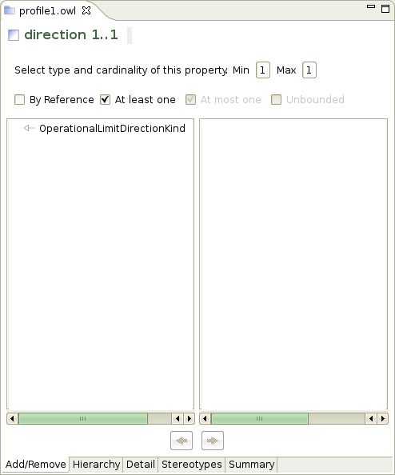
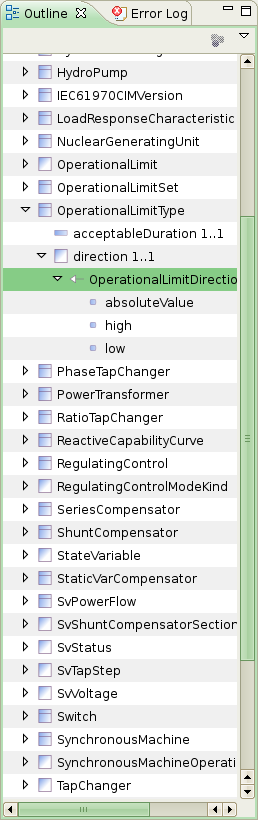
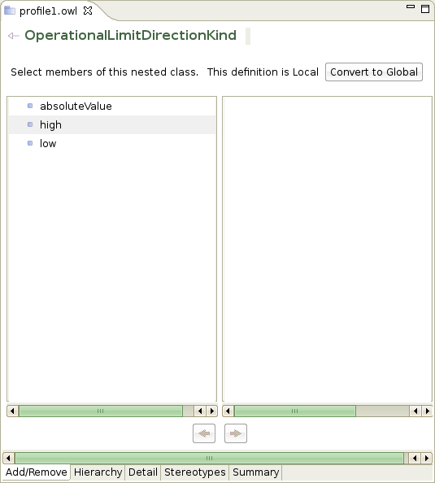
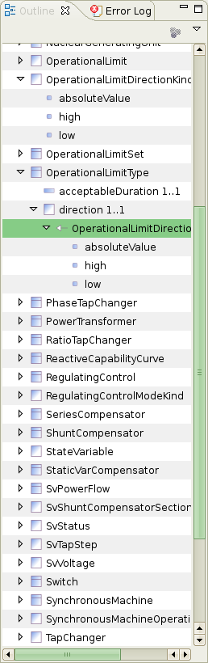
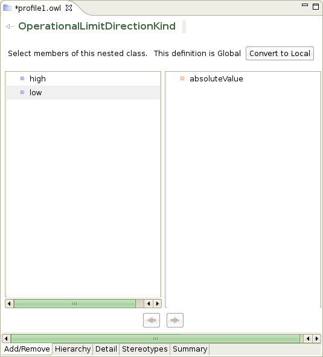

Enumerated classes are defined in UML, per the CIM convention, with a stereotype of <<enumeration>> . They are displayed in CIMTool like this:

Here RegulatingControlModeKind is shown in the Project Model view.
If you add an enumerated attribute such as RegulatingControl.mode to a profile, then select it, the add/remove page of the profile editor will show this:

At this stage, the attribute has no type defined within this profile. That does not matter if you are targeting CIM/XML as CIMTool will complete the definition in the generated artifacts automatically.
But you may want to complete the definition anyway for the profile documentation. This is done in the usual way by selecting the element to be added on the right and clicking the left arrow button. That gives you this display:

Note that in CIMTool 1.3.3 you may need to save to cause the display to fully refresh. After saving, the outline shows RegulatingControl.mode with its type, RegulatingControlModeKind, and its allowed values:

If you select the type, RegulatingControlModeKind, the add/remove page says that this is a local definition and provides a button to make it global.

Local means that the type applies to this attribute only. If you modify the type (e.g. by removing some allowed values) no other attribute in the profile is affected.
Alternatively, you can promote the type to a global, top-level member of the profile by clicking the Convert to Global button. The profile outline will now look like this:

You might go on to restrict the allowed values. For example, if absoluteValue is removed from the profile the add/remove page shows this:

Note that in CIMTool 1.3.3, restricted enumerations are only supported for XML Schema targets. The CIM/XML profile artifacts continue to allow the full range of enumerated values.